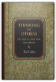
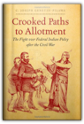
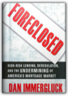
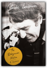
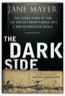
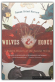
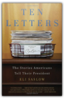
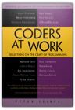
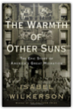
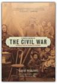

|
Thinking of Others: On the Talent for Metaphor

Ted Cohen
In Thinking of Others, Ted Cohen argues that the ability to imagine oneself as another person is an indispensable human capacity—as essential to moral awareness as it is to literary appreciation—and that this talent for identification is the same as the talent for metaphor. To be able to see oneself as someone else, whether the someone else is a real person or a fictional character, is to exercise the ability to deal with metaphor and other figurative language. The underlying faculty, Cohen argues, is the same—simply the ability to think of one thing as another when it plainly is not.In an engaging style, Cohen explores this idea by examining various occasions for identifying with others, including reading fiction, enjoying sports, making moral arguments, estimating one's future self, and imagining how one appears to others. Using many literary examples, Cohen argues that we can engage with fictional characters just as intensely as we do with real people, and he looks at some of the ways literature itself takes up the question of interpersonal identification and understanding. An original meditation on the necessity of imagination to moral and aesthetic life, Thinking of Others is an important contribution to philosophy and literary theory. The Making of Russian Absolutism 1613-1801
The central theme of the book is the growth of absolutism in Russia throughout these years, and it traces in detail how the Russian variety of what was a contemporary European phenomenon came fully into being. Crooked Paths to Allotment: The Fight over Federal Indian Policy after the Civil War

C. Joseph Genetin-pilawa
Standard narratives of Native American history view the nineteenth century in terms of steadily declining Indigenous sovereignty, from removal of southeastern tribes to the 1887 General Allotment Act. In Crooked Paths to Allotment, C. Joseph Genetin-Pilawa complicates these narratives, focusing on political moments when viable alternatives to federal assimilation policies arose. In these moments, Native American reformers and their white allies challenged coercive practices and offered visions for policies that might have allowed Indigenous nations to adapt at their own pace and on their own terms. Examining the contests over Indian policy from Reconstruction through the Gilded Age, Genetin-Pilawa reveals the contingent state of American settler colonialism.Genetin-Pilawa focuses on reformers and activists, including Tonawanda Seneca Ely S. Parker and Council Fire editor Thomas A. Bland, whose contributions to Indian policy debates have heretofore been underappreciated. He reveals how these men and their allies opposed such policies as forced land allotment, the elimination of traditional cultural practices, mandatory boarding school education for Indian youth, and compulsory participation in the market economy. Although the mainstream supporters of assimilation successfully repressed these efforts, the ideas and policy frameworks they espoused established a tradition of dissent against disruptive colonial governance. Running: A Global History
Amongst the numerous examples that illustrate Gotaas’s history are King Shulgi of Mesopotamia, who four millennia ago boasted of running from Nippur to Ur, a distance of not less than 100 miles. Gotaas’s account also includes ancient Egyptian pharaohs who ran to prove their vitality and maintain their power, Norwegian Vikings who exercised by running races against animals, as well as little-known naked runs, bar endurance tests, backward runs, monk runs, snowshoe runs, and the Incas’ ingenious infrastructure of professional runners. The perfect gift for the sprinter, the marathoner, or the daily jogger, this intriguing world history will appeal to all who wish to know more about why the ancients shared our love—and hatred—of this demanding but rewarding pastime. Foreclosed: High-Risk Lending, Deregulation, and the Undermining of America's Mortgage Market

Dan Immergluck
In 2007 and 2008, the United States has observed, with some horror, the explosion and collapse of entire segments of the housing market, especially those driven by subprime and alternative or "exotic" home mortgage lending. Foreclosed explains the rise of high-risk lending and why these newer types of loans-and their associated regulatory infrastructure-failed in substantial ways. Dan Immergluck narrates the boom in subprime and exotic loans, recounting how financial innovations and deregulation facilitated excessive risk-taking, and how these loans have harmed different populations and communities.Immergluck, who has been working, researching, and writing on issues tied to housing finance and neighborhood change for almost twenty years, has an intimate knowledge of the promotion of homeownership and the history of mortgages in the United States. The changes to the mortgage market over the past fifteen years-including the securitization of mortgages and the failure of regulators to maintain control over a much riskier array of mortgage products-led, he finds, inexorably to the current crisis. After describing the development of generally stable and risk-limiting mortgage markets throughout much of the twentieth century, Foreclosed details how federal policy-makers failed to regulate the new high-risk lending markets that arose in the late 1990s and early 2000s. The book also examines federal, state, and local efforts to deal with the mortgage and foreclosure crisis of 2007 and 2008. Immergluck draws upon his wealth of experience to provide an overarching set of principles and a detailed set of policy recommendations for "righting the ship" of U.S. housing finance in ways that will promote affordable yet sustainable homeownership as an option for a broad set of households and communities. The 2011 paperback edition features a new preface by the author addressing the ongoing global economic crisis and the impact of U.S. financial reform efforts on the mortgage system. The Patagonian Hare: A Memoir

Claude Lanzmann
“Even if I lived a hundred lives, I still wouldn’t be exhausted.” These words capture the intensity of the experiences of Claude Lanzmann, a man whose acts have always been a negation of resignation: a member of the Resistance at sixteen, a friend to Jean-Paul Sartre and a lover to Simone de Beauvoir, and the director of one of the most important films in the history of cinema, Shoah.In these pages, Lanzmann composes a hymn to life that flows from memory yet has the rhythm of a novel, as tumultuous as it is energetic. The Patagonian Hare is the story of a man who has searched at every moment for existential adventure, who has committed himself deeply to what he believes in, and who has made his life a battle. The Patagonian Hare, a number-one bestseller in France, has been translated into Spanish, German, Italian, Hebrew, Polish, Dutch, and Portuguese. Claude Lanzmann’s brilliant memoir has been widely acclaimed as a masterpiece, was hailed as “a true literary and historic event” in the pages of Le Monde, and was awarded the prestigious Welt-Literaturpreis in Germany. Tour de France: The Illustrated History
Every year since, almost one billion people follow the Tour de France, making it the third most popular sporting event after the Olympics and the World Cup. Often described as the equivalent of running twenty marathons in twenty days, the Tour's popularity in the United States has exploded, thanks largely to the performance of the American cyclist Lance Armstrong, who won his fourth consecutive Tour de France in 2002. Tour de France: The Illustrated History is packed with vivid, action-filled photographs and covers every aspect of the race, including: The organizersTechnical advancesThe scandals. Cycling superstars Greg Lemond, Jacques Anquetil, Miguel Indurain, and Lance Armstrong are featured. Be Cool
Chili Palmer's follow-up to his smash hit film Get Leo bombed, and in Hollywood, you're considered only as hot as your last project. Once again outside the system, Chili is exploring an idea for his third film by lunching with a former "associate" from his Brooklyn days who's now a record label executive. When lunch begins with iced tea and ends in a mob hit, Chili soon finds himself in an unlikely alliance with one of the LAPD's finest, Detective Darryl Holmes, and the very likely next target of Russian gangsters. With a hit man on his trail, Chili tries to pull together his next movie, the story of Linda Moon, a real-life singer with dreams that go further than her current gig with Chicks International, just doing Spice Girls songs. She's desperate to tear loose from her current manager, an erstwhile pimp named Raji. Orchestrating his movie as he goes along, Chili wrests the reins of Linda's singing career away from Raji, basing the plot of his new film on the action that unfolds as a result. As he fakes his way to success in the music business with his trademark aplomb, Chili manipulates his adversaries and advances his friends, showing all how to be cool when the heat's on. With his unique combination of the good, the bad, and the unexpected, Elmore Leonard has written a novel that twists and turns to the last page. From screen tests to rock sessions, from the Hills and the Valley to Hollywood and Vine, Be Cool is all new, all clever and, most definitely, all that. The Dark Side: The Inside Story of How The War on Terror Turned into a War on American Ideals

Jane Mayer
A dramatic and damning narrative account of how America has fought the"War on Terror" In the days immediately following September 11th, the most powerful people in the country were panic-stricken. The radical decisions about how to combat terrorists and strengthen national security were made in a state of utter chaos and fear, but the key players, Vice President Dick Cheney and his powerful, secretive adviser David Addington, used the crisis to further a long held agenda to enhance Presidential powers to a degree never known in U.S. history, and obliterate Constitutional protections that define the very essence of the American experiment. THE DARK SIDE is a dramatic, riveting, and definitive narrative account of how the United States made terrible decisions in the pursuit of terrorists around the world— decisions that not only violated the Constitution to which White House officials took an oath to uphold, but also hampered the pursuit of Al Qaeda. In gripping detail, acclaimed New Yorker writer and bestselling author, Jane Mayer, relates the impact of these decisions—U.S.-held prisoners, some of them completely innocent, were subjected to treatment more reminiscent of the Spanish Inquisition than the twenty-first century. THE DARK SIDE will chronicle real, specific cases, shown in real time against the larger tableau of what was happening in Washington, looking at the intelligence gained—or not—and the price paid. In some instances, torture worked. In many more, it led to false information, sometimes with devastating results. For instance, there is the stunning admission of one of the detainees, Sheikh Ibn al-Libi, that the confession he gave under duress—which provided a key piece of evidence buttressing congressional support of going to war against Iraq—was in fact fabricated, to make the torture stop. In all cases, whatever the short term gains, there were incalculable losses in terms of moral standing, and our country's place in the world, and its sense of itself. THE DARK SIDE chronicles one of the most disturbing chapters in American history, one that will serve as the lasting legacy of the George W. Bush presidency. Wolves and Honey: A Hidden History of the Natural World

Susan Brind Morrow
One seeks for words worthy of the authenticity and intimacy of this beautiful book. It is a treasury of perceptions, tender and unsparing, of our planetary existence; a sensual affinity with all that grows, flourishes, and dies—conveyed in a clear voice unlike any other." — Shirley HazzardAn arresting reflection on the human relationship with nature, Wolves and Honey is grounded in the exploration of two eccentric personalities — one a trapper, the other a beekeeper — and their very different attitudes toward the world. While illuminating her own poignant relationships with these men who deeply influenced her, Susan Brind Morrow offers a meditation on the land itself — specifically, the rich and storied Finger Lakes region of New York. Keenly attuned to unexpected scientific, historical, and metaphorical connections, Morrow's writing provides a strikingly original perspective on the fine but resilient threads that bind us all to the natural world. "Beautifully crafted prose . . . trac[es] the rich histories of two men — one a beekeeper, the other a trapper . . . One of those rare nature books that mixes a perfect combination of personal insight and historical depth." — USA Today "A riveting compendium of observations from a very curious, very interesting mind . . . Morrow manages paragraphs as poets manage line breaks." — Boston Globe "A meditation on the outdoors that evokes 'the smell of damp earth, the sweetness of maples and pines . . . as though it were freedom itself.'" — The New Yorker "So venerably beautiful it makes your teeth ache." — Kirkus Reviews Susan Brind Morrow is the author of The Names of Things. Ten Letters: The Stories Americans Tell Their President

Eli Saslow
In this inspiring and powerful look at the issues facing Americans today, reporter Eli Saslow creates vivid portraits of the lives of ten citizens who corresponded with President Obama. Their letters, and the president’s handwritten responses, tell of the personal struggles behind everything from healthcare to immigration to war. One mother writes to express her fears about the wellbeing of a son currently deployed in Afghanistan. A young girl in Kentucky shares her frustrations while attending one of the country’s worst schools, and the president relies on her story in his push for education reform. What these ten letters reveal about the relationship between a president and the people he governs is deeply affecting, and what ultimately emerges from within the stories is the incredible endurance and optimism of the American people.
Squirrel Seeks Chipmunk: A Modest Bestiary
In "The Toad, the Turtle, and the Duck," three strangers commiserate about animal bureaucracy while waiting in a complaint line. In "Hello Kitty," a cynical feline struggles to sit through his prison-mandated AA meetings. In "The Squirrel and the Chipmunk," a pair of star-crossed lovers is separated by prejudiced family members. With original illustrations by Ian Falconer, author of the bestselling Olivia series of children's books, these stories are David Sedaris at his most observant, poignant, and surprising. Coders at Work: Reflections on the Craft of Programming

Peter Seibel
Peter Seibel interviews 15 of the most interesting computer programmers alive today in Coders at Work, offering a companion volume to Apress’s highly acclaimed best-seller Founders at Work by Jessica Livingston. As the words “at work” suggest, Peter Seibel focuses on how his interviewees tackle the day-to-day work of programming, while revealing much more, like how they became great programmers, how they recognize programming talent in others, and what kinds of problems they find most interesting.Hundreds of people have suggested names of programmers to interview on the Coders at Work web site: www.codersatwork.com. The complete list was 284 names. Having digested everyone’s feedback, we selected 15 folks who’ve been kind enough to agree to be interviewed: Frances Allen: Pioneer in optimizing compilers, first woman to win the Turing Award (2006) and first female IBM fellowJoe Armstrong: Inventor of ErlangJoshua Bloch: Author of the Java collections framework, now at GoogleBernie Cosell: One of the main software guys behind the original ARPANET IMPs and a master debuggerDouglas Crockford: JSON founder, JavaScript architect at Yahoo!L. Peter Deutsch: Author of Ghostscript, implementer of Smalltalk-80 at Xerox PARC and Lisp 1.5 on PDP-1Brendan Eich: Inventor of JavaScript, CTO of the Mozilla CorporationBrad Fitzpatrick: Writer of LiveJournal, OpenID, memcached, and PerlbalDan Ingalls: Smalltalk implementor and designerSimon Peyton Jones: Coinventor of Haskell and lead designer of Glasgow Haskell CompilerDonald Knuth: Author of The Art of Computer Programming and creator of TeXPeter Norvig: Director of Research at Google and author of the standard text on AIGuy Steele: Coinventor of Scheme and part of the Common Lisp Gang of Five, currently working on FortressKen Thompson: Inventor of UNIXJamie Zawinski: Author of XEmacs and early Netscape/Mozilla hackerWhat you’ll learn How the best programmers in the world do their jobs!Who this book is for Programmers interested in the point of view of leaders in the field. Programmers looking for approaches that work for some of these outstanding programmers. Table of Contents Jamie ZawinskiBrad FitzpatrickDouglas CrockfordBrendan EichJoshua BlochJoe ArmstrongSimon Peyton JonesPeter NorvigGuy SteeleDan IngallsL Peter DeutschKen ThompsonFran AllenBernie CosellDonald Knuth Red Men in Red Square: Chief Big Eagle Visits the Soviet Union
'Each summer...near Leningrad an American Indian camp appears with teepees, a totem pole, and people dressed as they were when American was discovered.' The Divided Ground: Indians, Settlers, and the Northern Borderland of the American Revolution
By telling their dramatic story, Alan Taylor illuminates the dual borders that consolidated the new American nation after the Revolution. By constricting Indians within reservation lines, the Americans sought to control their northern boundary with the British Empire, which lingered in Canada. The border became firm as thousands of settlers established farms, held as private property, all around the new reservations. This struggle also pitted the federal government against the leaders of New York, competing to control the lands and the Indians of the border country. They contended for the highest of stakes because the transformation of Indian land constructed the wealth and the power of states, nations, and empires in North America. In addition to land, the frontier contest pivoted on murders, which repeatedly tested who had legal jurisdiction: Indians or newcomers. To assert power, the contending regimes sought to try and execute Indians or settlers who killed one another. To defend native autonomy, however, the Indians asserted an alternative by “covering the graves” of victims with presents to console their kin. When the gallows replaced covered graves, the Indians lost their middle position as free peoples. Taylor breaks with the stereotype of Indians as defiant but doomed traditionalists, as noble but futile defenders of ancient ways. In fact, the borderland Indians demonstrated remarkable adaptability and creativity in coping with the contending powers and with the growing numbers of invading settlers. Led by Joseph Brant, the natives tried to manage, rather than entirely to block, the process of settlement. Taylor shows that they did so in ways meant to preserve Indian autonomy and prosperity. Rather than sell lands for a song to governments, the Indians sought greater control and revenue by leasing lands directly to settler tenants. But neither the British nor the American leaders could accept Indians as landlords, as competitors in the construction of power from land in North America. Once a “middle ground,” the borderland became a divided ground, partitioned between the British Empire and the American republic. The Warmth of Other Suns: The Epic Story of America's Great Migration

Isabel Wilkerson
In this epic, beautifully written masterwork, Pulitzer Prize–winning author Isabel Wilkerson chronicles one of the great untold stories of American history: the decades-long migration of black citizens who fled the South for northern and western cities, in search of a better life. From 1915 to 1970, this exodus of almost six million people changed the face of America. Wilkerson compares this epic migration to the migrations of other peoples in history. She interviewed more than a thousand people, and gained access to new data and official records, to write this definitive and vividly dramatic account of how these American journeys unfolded, altering our cities, our country, and ourselves.With stunning historical detail, Wilkerson tells this story through the lives of three unique individuals: Ida Mae Gladney, who in 1937 left sharecropping and prejudice in Mississippi for Chicago, where she achieved quiet blue-collar success and, in old age, voted for Barack Obama when he ran for an Illinois Senate seat; sharp and quick-tempered George Starling, who in 1945 fled Florida for Harlem, where he endangered his job fighting for civil rights, saw his family fall, and finally found peace in God; and Robert Foster, who left Louisiana in 1953 to pursue a medical career, the personal physician to Ray Charles as part of a glitteringly successful medical career, which allowed him to purchase a grand home where he often threw exuberant parties. Wilkerson brilliantly captures their first treacherous and exhausting cross-country trips by car and train and their new lives in colonies that grew into ghettos, as well as how they changed these cities with southern food, faith, and culture and improved them with discipline, drive, and hard work. Both a riveting microcosm and a major assessment, The Warmth of Other Suns is a bold, remarkable, and riveting work, a superb account of an “unrecognized immigration” within our own land. Through the breadth of its narrative, the beauty of the writing, the depth of its research, and the fullness of the people and lives portrayed herein, this book is destined to become a classic. A People's History of the Civil War: Struggles for the Meaning of Freedom

David Williams, Howard Zinn
The acclaimed sweeping history of a nation at war with itself, told here for the first time by the people who lived it.Bottom-up history at its very best, A People's History of the Civil War "does for the Civil War period what Howard Zinn's A People's History of the United States did for the study of American history in general" (Library Journal). Widely praised upon its initial release, it was described as "meticulously researched and persuasively argued" by the Atlanta Journal-Constitution. Historian David Williams has written the first account of the American Civil War though the eyes of ordinary people—foot soldiers, slaves, women, prisoners of war, draft resisters, Native Americans, and others. Richly illustrated with little-known anecdotes and first-hand testimony, this pathbreaking narrative moves beyond presidents and generals to tell a new and powerful story about America's most destructive conflict. A People's History of the Civil War is "readable social history" which "sheds fascinating light" (Publishers Weekly) on this crucial period. In so doing it recovers the long-overlooked perspectives and forgotten voices of one of the defining chapters of American history. Forty b/w images. |


My Library
Collection Total:
1320 Items
1320 Items
Last Updated:
Apr 14, 2013
Apr 14, 2013
 Made with Delicious Library
Made with Delicious Library